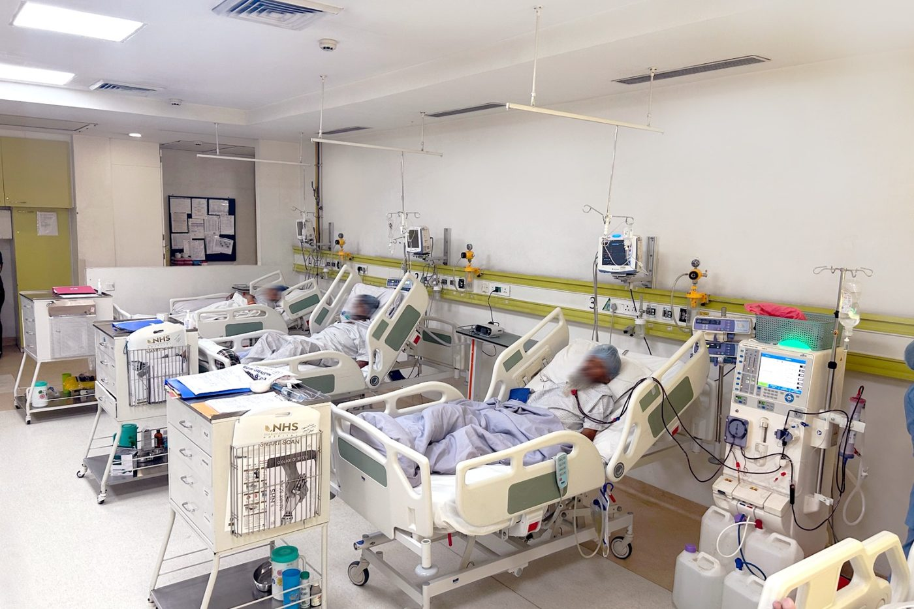
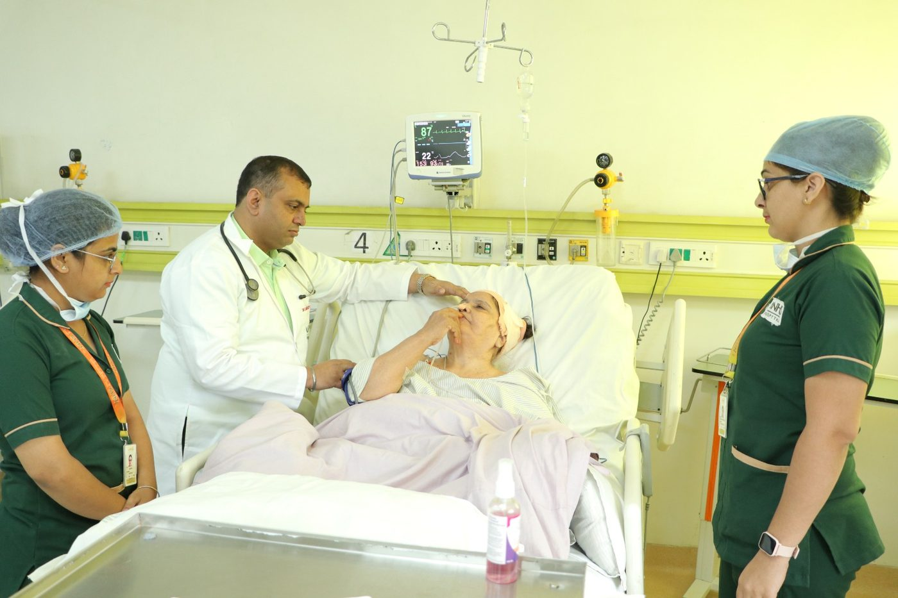

What the department coversਵਿਭਾਗ ਕੀ-ਕੀ ਕਰਦਾ ਹੈ
From the first abnormal blood test to long-term dialysis, handled by one team so your history does not have to be re-explained.ਪਹਿਲੀ ਖ਼ਰਾਬ ਰਿਪੋਰਟ ਤੋਂ ਲੰਮੇ ਸਮੇਂ ਦੇ ਡਾਇਲਸਿਸ ਤੱਕ, ਸਭ ਇੱਕੋ ਟੀਮ ਸੰਭਾਲਦੀ ਹੈ — ਹਰ ਵਾਰ ਪੁਰਾਣੀ ਗੱਲ ਦੁਬਾਰਾ ਦੱਸਣ ਦੀ ਲੋੜ ਨਹੀਂ।
Maintenance haemodialysisਨਿਯਮਿਤ ਡਾਇਲਸਿਸ
Regular dialysis sessions on scheduled slots, with the same nursing team and monitoring each visit.ਤੈਅ ਸਮੇਂ ਉੱਤੇ ਡਾਇਲਸਿਸ, ਹਰ ਵਾਰ ਉਹੀ ਨਰਸਿੰਗ ਟੀਮ ਤੇ ਨਿਗਰਾਨੀ।
Critical care nephrologyICU ਵਿੱਚ ਗੁਰਦੇ ਦਾ ਇਲਾਜ
Dialysis and kidney support for unstable patients inside the intensive care unit.ਗੰਭੀਰ ਹਾਲਤ ਵਾਲੇ ਮਰੀਜ਼ਾਂ ਲਈ ICU ਦੇ ਅੰਦਰ ਹੀ ਡਾਇਲਸਿਸ ਤੇ ਗੁਰਦੇ ਦਾ ਸਹਾਰਾ।
Renal biopsy & diagnosisਗੁਰਦੇ ਦੀ ਬਾਇਓਪਸੀ ਤੇ ਜਾਂਚ
Biopsy and workup to find the cause of protein in urine, swelling or falling kidney function.ਪਿਸ਼ਾਬ ਵਿੱਚ ਪ੍ਰੋਟੀਨ, ਸੋਜ ਜਾਂ ਗੁਰਦੇ ਦੀ ਘਟਦੀ ਤਾਕਤ ਦਾ ਕਾਰਨ ਲੱਭਣ ਲਈ ਬਾਇਓਪਸੀ ਤੇ ਟੈਸਟ।
Access & catheter careਨਾੜੀ ਤੇ ਕੈਥੀਟਰ ਦੀ ਸੰਭਾਲ
Creating and looking after dialysis access, and dealing with catheter problems and infections.ਡਾਇਲਸਿਸ ਲਈ ਨਾੜੀ ਬਣਾਉਣਾ ਤੇ ਸੰਭਾਲਣਾ, ਨਾਲੇ ਕੈਥੀਟਰ ਦੀਆਂ ਸਮੱਸਿਆਵਾਂ ਤੇ ਇਨਫੈਕਸ਼ਨ ਦਾ ਇਲਾਜ।
Long-term kidney diseaseਲੰਮੇ ਸਮੇਂ ਦਾ ਗੁਰਦਾ ਰੋਗ
Slowing progression where possible — blood pressure, diabetes, diet and medicine review at each visit.ਜਿੱਥੇ ਹੋ ਸਕੇ ਬਿਮਾਰੀ ਹੌਲੀ ਕਰਨੀ — ਹਰ ਮੁਲਾਕਾਤ ਵਿੱਚ ਬੀ.ਪੀ., ਸ਼ੂਗਰ, ਖ਼ੁਰਾਕ ਤੇ ਦਵਾਈਆਂ ਦੀ ਜਾਂਚ।
Working with urologyਪਿਸ਼ਾਬ ਰੋਗ ਵਿਭਾਗ ਨਾਲ ਮਿਲ ਕੇ
Stones, obstruction and transplant assessment discussed jointly with the urology team on site.ਪੱਥਰੀ, ਰੁਕਾਵਟ ਤੇ ਟਰਾਂਸਪਲਾਂਟ ਦੀ ਜਾਂਚ ਇੱਥੇ ਹੀ ਪਿਸ਼ਾਬ ਰੋਗ ਟੀਮ ਨਾਲ ਮਿਲ ਕੇ।
Early kidney disease is usually silentਸ਼ੁਰੂ ਵਿੱਚ ਗੁਰਦੇ ਦਾ ਰੋਗ ਪਤਾ ਨਹੀਂ ਲੱਗਦਾ
Kidneys can lose a great deal of function before anything hurts. Swelling around the ankles or eyes, frothy urine, tiredness and poorly controlled blood pressure are the signs people usually notice first.ਦਰਦ ਸ਼ੁਰੂ ਹੋਣ ਤੋਂ ਪਹਿਲਾਂ ਹੀ ਗੁਰਦੇ ਬਹੁਤ ਤਾਕਤ ਗੁਆ ਸਕਦੇ ਹਨ। ਗਿੱਟਿਆਂ ਜਾਂ ਅੱਖਾਂ ਦੁਆਲੇ ਸੋਜ, ਝੱਗ ਵਾਲਾ ਪਿਸ਼ਾਬ, ਥਕਾਵਟ ਤੇ ਕਾਬੂ ਨਾ ਆਉਂਦਾ ਬੀ.ਪੀ. — ਇਹ ਪਹਿਲੀਆਂ ਨਿਸ਼ਾਨੀਆਂ ਹਨ।
If you have diabetes or high blood pressure, a yearly creatinine and urine test is worth doing even when you feel well — ask your doctor whether it applies to you.ਜੇ ਸ਼ੂਗਰ ਜਾਂ ਬੀ.ਪੀ. ਹੈ ਤਾਂ ਸਾਲ ਵਿੱਚ ਇੱਕ ਵਾਰ ਕਰੀਏਟੀਨਿਨ ਤੇ ਪਿਸ਼ਾਬ ਦਾ ਟੈਸਟ ਕਰਵਾਉਣਾ ਚੰਗਾ ਹੈ, ਭਾਵੇਂ ਤਬੀਅਤ ਠੀਕ ਹੋਵੇ — ਆਪਣੇ ਡਾਕਟਰ ਤੋਂ ਪੁੱਛੋ।
General information only. Test schedules and treatment are decided individually by your treating doctor.ਸਿਰਫ਼ ਆਮ ਜਾਣਕਾਰੀ। ਟੈਸਟ ਕਦੋਂ ਤੇ ਇਲਾਜ ਕੀ — ਇਹ ਤੁਹਾਡਾ ਡਾਕਟਰ ਹੀ ਤੈਅ ਕਰਦਾ ਹੈ।

What to expect, step by stepਕਦਮ-ਦਰ-ਕਦਮ ਕੀ ਹੋਵੇਗਾ
Before you arriveਆਉਣ ਤੋਂ ਪਹਿਲਾਂ
The desk tells you which reports to bring and books your slot, including a transfer of ongoing dialysis.ਕਾਊਂਟਰ ਦੱਸ ਦਿੰਦਾ ਹੈ ਕਿਹੜੀਆਂ ਰਿਪੋਰਟਾਂ ਲਿਆਉਣੀਆਂ ਹਨ ਤੇ ਸਮਾਂ ਬੁੱਕ ਕਰ ਦਿੰਦਾ ਹੈ — ਚੱਲ ਰਹੇ ਡਾਇਲਸਿਸ ਨੂੰ ਇੱਥੇ ਬਦਲਣਾ ਵੀ।
Tests, then a senior readਟੈਸਟ, ਫਿਰ ਸੀਨੀਅਰ ਡਾਕਟਰ ਦੀ ਜਾਂਚ
Blood, urine and imaging on site, reviewed by the consultant rather than passed on.ਖ਼ੂਨ, ਪਿਸ਼ਾਬ ਤੇ ਸਕੈਨ ਇੱਥੇ ਹੀ, ਤੇ ਜਾਂਚ ਸੀਨੀਅਰ ਡਾਕਟਰ ਆਪ ਕਰਦਾ ਹੈ।
Treatment or dialysisਇਲਾਜ ਜਾਂ ਡਾਇਲਸਿਸ
Medical treatment, or a dialysis schedule you can plan around, with the insurance desk handling approvals.ਦਵਾਈਆਂ ਨਾਲ ਇਲਾਜ, ਜਾਂ ਡਾਇਲਸਿਸ ਦਾ ਅਜਿਹਾ ਸਮਾਂ ਜਿਸ ਦੁਆਲੇ ਕੰਮ ਬਣ ਸਕੇ — ਬੀਮੇ ਦੀ ਮਨਜ਼ੂਰੀ ਸਾਡਾ ਕਾਊਂਟਰ ਕਰਦਾ ਹੈ।
The weeks afterਅਗਲੇ ਹਫ਼ਤੇ
Follow-up visits, diet guidance from the dietetics team, and adjustments as your numbers change.ਅਗਲੀਆਂ ਮੁਲਾਕਾਤਾਂ, ਖ਼ੁਰਾਕ ਮਾਹਿਰ ਦੀ ਸਲਾਹ, ਤੇ ਰਿਪੋਰਟਾਂ ਬਦਲਣ ਨਾਲ ਇਲਾਜ ਵਿੱਚ ਤਬਦੀਲੀ।

Dr. Sanjay Kumar Sharmaਡਾ. ਸੰਜੇ ਕੁਮਾਰ ਸ਼ਰਮਾ
Consultant Nephrologist — dialysis, critical care nephrology, glomerular diseaseਗੁਰਦੇ ਰੋਗਾਂ ਦੇ ਮਾਹਿਰ — ਡਾਇਲਸਿਸ, ICU ਵਿੱਚ ਗੁਰਦੇ ਦਾ ਇਲਾਜ, ਗੁਰਦੇ ਦੀ ਸੋਜ ਦੇ ਰੋਗ
Runs the kidney service, from first review of an abnormal blood test through to long-term dialysis, with intensive care and urology support on the same campus.ਗੁਰਦੇ ਦੇ ਵਿਭਾਗ ਦੀ ਅਗਵਾਈ ਕਰਦੇ ਹਨ — ਪਹਿਲੀ ਖ਼ਰਾਬ ਰਿਪੋਰਟ ਤੋਂ ਲੰਮੇ ਡਾਇਲਸਿਸ ਤੱਕ, ਨਾਲ ICU ਤੇ ਪਿਸ਼ਾਬ ਰੋਗ ਵਿਭਾਗ ਦਾ ਸਹਾਰਾ।
Qualifications and registration details are available at the desk on request.ਡਿਗਰੀਆਂ ਤੇ ਰਜਿਸਟ੍ਰੇਸ਼ਨ ਦੀ ਜਾਣਕਾਰੀ ਕਾਊਂਟਰ ਤੋਂ ਮੰਗ ਕੇ ਲਈ ਜਾ ਸਕਦੀ ਹੈ।
Cashless & TPAਕੈਸ਼ਲੈਸ ਤੇ TPA
Our desk argues the paperwork with insurers and schemes so you are not doing it between sessions.ਬੀਮਾ ਕੰਪਨੀਆਂ ਤੇ ਸਕੀਮਾਂ ਨਾਲ ਕਾਗ਼ਜ਼ੀ ਗੱਲਬਾਤ ਸਾਡਾ ਕਾਊਂਟਰ ਕਰਦਾ ਹੈ, ਤਾਂ ਜੋ ਤੁਹਾਨੂੰ ਸੈਸ਼ਨਾਂ ਵਿਚਾਲੇ ਭੱਜਣਾ ਨਾ ਪਵੇ।
Infection controlਇਨਫੈਕਸ਼ਨ ਤੋਂ ਬਚਾਅ
Central sterile services and routine sterility checks in the critical care unit.ਸੈਂਟਰਲ ਸਟਰਾਈਲ ਵਿਭਾਗ ਤੇ ICU ਵਿੱਚ ਨਿਯਮਿਤ ਸਫ਼ਾਈ ਜਾਂਚ।
Kidney emergencyਗੁਰਦੇ ਦੀ ਐਮਰਜੈਂਸੀ
The emergency line answers 24 hours: 0181-4707700.
Where your kidney care happensਤੁਹਾਡੇ ਗੁਰਦੇ ਦਾ ਇਲਾਜ ਕਿੱਥੇ ਹੁੰਦਾ ਹੈ
The unit, the wards and the consultant rounds behind a dialysis schedule.ਡਾਇਲਸਿਸ ਦੇ ਸਮੇਂ ਪਿੱਛੇ ਦੀ ਯੂਨਿਟ, ਵਾਰਡ ਤੇ ਡਾਕਟਰਾਂ ਦੇ ਗੇੜੇ।


